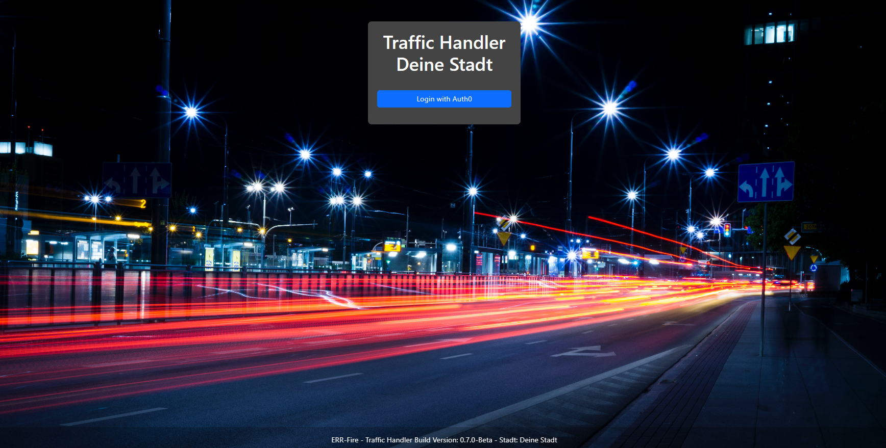

IAM - Identity & Access Management
Wie innerhalb des Kapitels "Erste Konfiguration" erwähnt, besteht die Möglichkeit, dass System an ein IAM für die Authentifizierung anzubinden.
Hierzu befindet sich im folgenden Verzeichnis
opt/TrafficHandler/traffic_handler/conf
eine iam.env Datei.
Diese sieht im Standard wie folgt aus:
Auth-Service=Auth0
IAM_CLIENT_ID={Client-ID}
IAM_CLIENT_SECRET={Client-Secret}
IAM_DOMAIN={IAM-Domain}
Auth-Service
Dieser Parameter kann dazu genutzt werden, seinem IAM einen Namen zu geben. Diese Name taucht ebenfalls in der Loginmaske auf, wenn sich der User Authentifizieren möchte.
IAM_CLIENT_ID
Hier muss die vom IAM bereitgestellte Client-ID eingetragen werden.
IAM_CLIENT_SECRET
Hier muss die vom IAM bereitgestellte Client-Secret eingetragen werden.
IAM_DOMAIN
Hier muss die vom IAM bereitgestellte Domain eingetragen werden.
LOGINBASIC
Bitte bedenken Sie, dass innerhalb der settings.cfg zu finden unter:
opt/TrafficHandler/traffic_handler/conf
der Parameter LOGINBASIC auf False gesetzt werden muss, damit das Login-Modul auf Authentifizierung über IAM umschaltet.
Anmeldemaske über IAM
